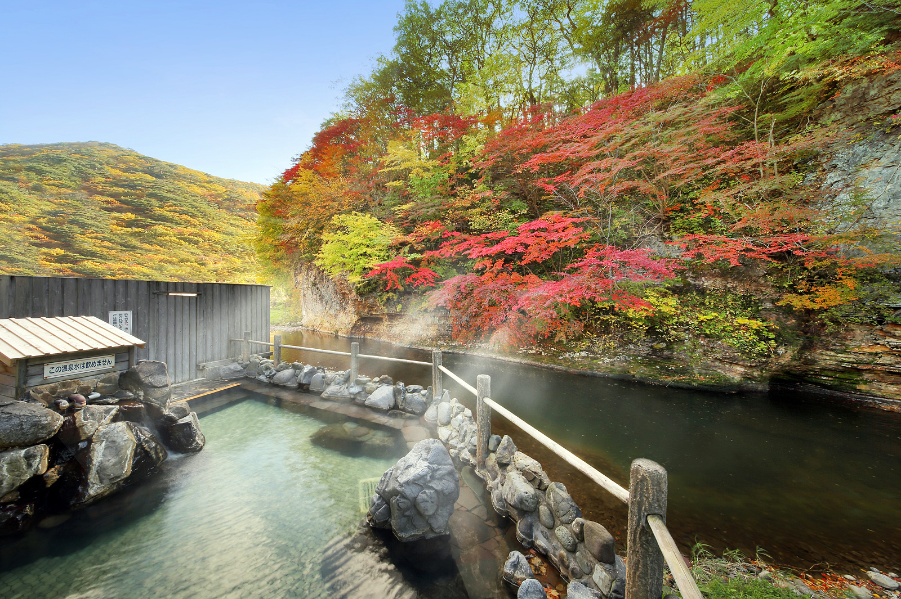
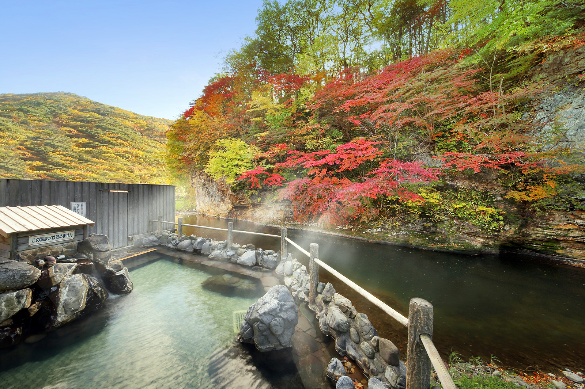

ホテル志戸平
 

ラウンジにはガラス一面に豊沢川と大自然を眺めることができ、フリードリンクが用意されて
いるため飲み物を味わいながらゆったり一息付けます。全長25メートルの湯船を持つ大浴場や
野趣あふれる露天風呂など全14種の湯殿が揃い、四季折々に変化する豊沢川の渓流と美しい
自然を眺めながら多彩な湯めぐりを愉しめます。敷地内には、屋内温水プールを併設している
ため、お子様と一緒に楽しむことができます。
観光情報
ジャンル
温泉・宿
所在地
岩手県花巻市湯口志戸平２７－１
電話番号
0193-25-2011
[アクセス経路]
盛岡IC → 【車35分】温泉
盛岡駅 → 【電車70分】温泉